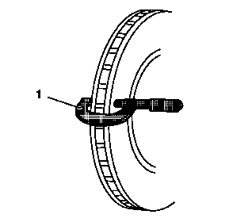

制动盘厚度偏差的测量
警告：
参见
有关制动器粉尘的警告
。
注意:
必须对厚度偏差超过最大允许值的盘式制动器制动盘进行表面修整或予以更换。如果制动盘厚度偏差超出最大允许值，则会引起制动器脉动。
1.
如果接触不到制动盘内侧摩擦面，则重新放置并支撑带制动片的制动钳。参见
前盘式制动片的更换
、
后盘式制动片的更换
。
2.
用工业酒精或经许可的同等制动器清洗剂，清洁制动盘的摩擦面。

3.
使用精度达到微米级或万分之一英寸级的千分尺(1)，测量并记录制动盘圆周上均匀分布的4个或更多个点的厚度。
务必确保仅在摩擦面内进行测量，且每次测量时千分尺与制动盘外边缘的距离相等，约
13毫米 (0.5 英寸)
。
4.
计算所记录的最高和最低厚度测量值之差，得出厚度偏差值。
5.
将厚度偏差测量值与盘式制动器组件规格相比较。
注意:
当制动盘进行表面修整或更换后，必须测量制动盘装配后横向跳动量(LRO)，以确保盘式制动器的最佳性能。
6.
如果制动盘厚度偏差测量值超过规格，则制动盘需要进行表面修整或更换。参见
前制动盘的更换
、
后制动盘的更换
、
制动盘表面修整
。